AI Academy · Level 4 · Grade 9 · Week 36 · Student lesson
ML Builder Expo
Learn to understand, design, build, test and explain AI systems responsibly.
Project: Responsible Plant Classifier
Before you start
Weeks 15–17: recover metrics from a complete confusion matrix.
Plan time to read, investigate and explain. Keep predictions separate from observations.
Student lesson · 1 of 14
Your mission
Your learning target
I can defend the project using traceable evidence.
I can explain errors and limits to a non-specialist audience.
I can respond to critique and propose an evidence-based next step.
Remember before reading
Close your notes first. A rough first answer helps us choose the right starting point; it is not a score for your ability.
Without opening the old lesson, explain one key idea from Capstone Train, Analyze, Improve. Give an example and a mistake that the idea helps you avoid.
Without opening the old lesson, explain one key idea from Model Cards and Human Review. Give an example and a mistake that the idea helps you avoid.
Without opening the old lesson, explain one key idea from Improve Generalization. Give an example and a mistake that the idea helps you avoid.
After trying, check the relevant lesson or ask your teacher. Change the part of your explanation that the evidence shows was wrong.
A builder defends the complete evidence chain: problem, data, code, model, metrics, errors, fairness, limitations, and human oversight.
Builder name and experiment date:
Readiness for the connected explanation
What is the difference between a result and a claim?
This week’s end goal
By the end, I can explain ml builder expo using a traced example and a stated limitation.
Student lesson · 2 of 14
Notice the evidence
PICTURE ENTRY
Notice → Predict → Explain
Begin with visible evidence; do not explain more than the picture and information support.
Name three visible details without interpreting them.
Predict the data, model, or evaluation decision being made.
Identify one hidden assumption that could change the result.
State what evidence would confirm or reject your prediction.
My prediction and supporting evidence:
A closer explanation
The final defense tells a coherent story: question, data, method, comparison, errors and limits. A strong project may conclude that the baseline is preferable or evidence is insufficient. The aim is sound reasoning and a reproducible investigation, not an impressive headline or polished unsupported claim.
Use fictional classroom data throughout this investigation. Keep the task, units, reference labels and data split visible as you reason. Earlier weeks supplied the model-building process; this week examines machine learning project defense.
Student lesson · 3 of 14
See how it works
ML MECHANISM
Input → Model → Evidence
Trace the information, fitted behavior, and evaluation proof separately.
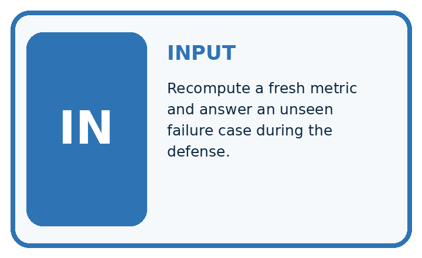
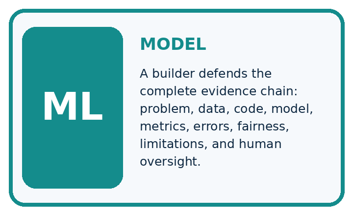
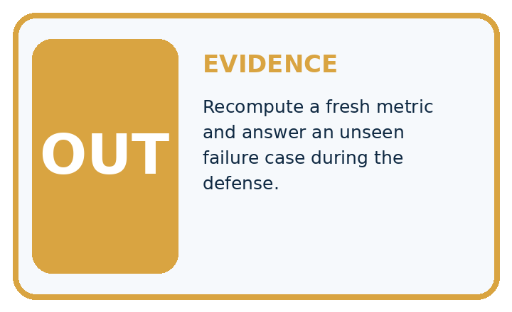
QUESTION Recompute a fresh metric and answer an unseen failure case during the defense.
MODEL IDEA A builder defends the complete evidence chain: problem, data, code, model, metrics, errors, fairness, limitations, and human oversight.
PROOF NEEDED Use an unseen case, visible calculation, error analysis, and a stated limitation.
Draw a fresh data → model → prediction → evaluation trace:
A closer explanation
Example opening: We compared a simple classifier with an always-clear training baseline on fictional parcels. We froze the procedure before a 12-case test. Candidate accuracy was 9/12 versus baseline 8/12; candidate FP 1 FN 2. These small synthetic results support a classroom comparison, not real parcel decisions. We would next investigate dim-condition coverage using new development data.
Before continuing, underline the decision rule and circle the evidence that supports the conclusion. Explain the example to a partner without replacing the counts or conditions with a stronger claim. Keep the distinction between an observed result and a proposed next step.
Connect the picture and the explanation
Point to the input, the deciding step and the result in this week’s visual. Explain the same step in ordinary words. A picture helps when you can say what each part represents.
Student lesson · 4 of 14
Compare the cases
EVALUATION DESIGN
Four Tests, Four Kinds of Evidence
A system is not understood until it survives more than one comfortable example.


NORMAL Expected data and expected behavior.
BOUNDARY Value close to a threshold, ambiguous label, or uncertain prediction.
MISSING Necessary field, label, source, or measurement is unavailable.
SHIFTED New lighting, species, device, subgroup, or time condition.
Which case most threatens today's claim, and why?
Change one thing in the pictured case
Change: The poster omits the baseline and calls the model “field ready”.
Prediction: The headline exceeds the supplied evidence.
Reason: No outdoor evaluation is supplied, and the comparative benefit is obscured without the same-case baseline.
Student lesson · 5 of 14
Words that unlock the idea
VOCABULARY
Words You Can Calculate and Defend
A definition matters when it lets you interpret a new dataset, model, or result.
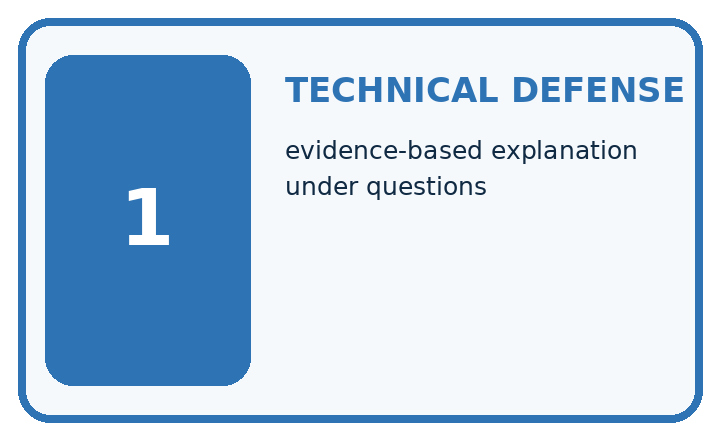
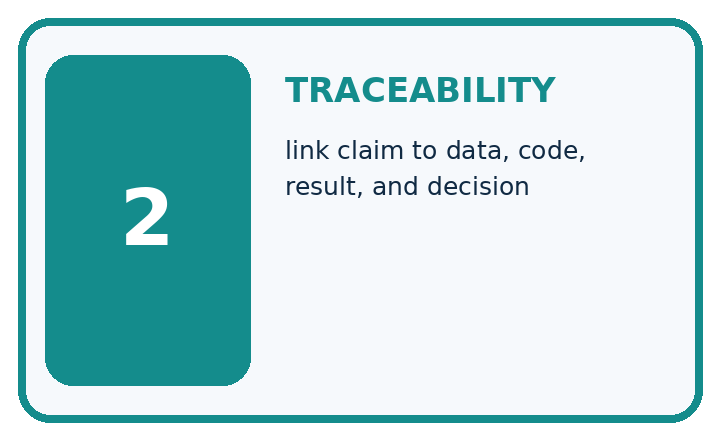
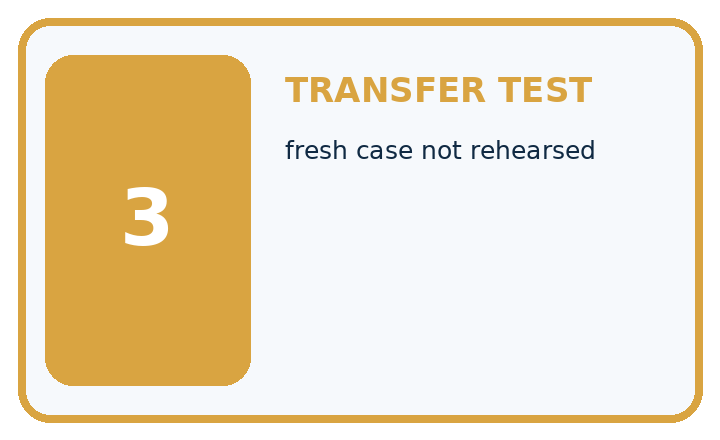
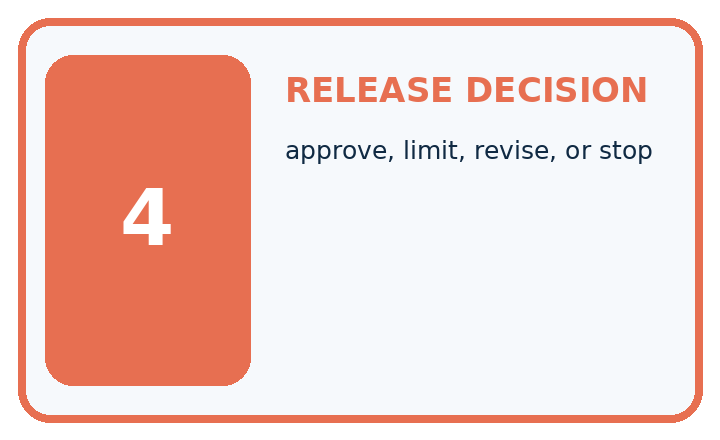
| Term | Precise meaning | My ML example |
|---|---|---|
| technical defense | evidence-based explanation under questions | |
| traceability | link claim to data, code, result, and decision | |
| transfer test | fresh case not rehearsed | |
| release decision | approve, limit, revise, or stop |
Repair the claim using a definition, calculation, or test record:
Words used in the closer explanation
| Word | Meaning |
|---|---|
| Defense | An explanation of decisions supported by inspectable evidence |
| Traceability | Ability to follow a claim back to its source |
| Limitation | A boundary on interpretation or supported use |
| Reflection | An account of learning and justified next steps |
Student lesson · 6 of 14
Follow a worked example
WORKED EVIDENCE
Reason Step by Step
Predict first. Then check each step. A correct answer without visible evidence cannot be audited.
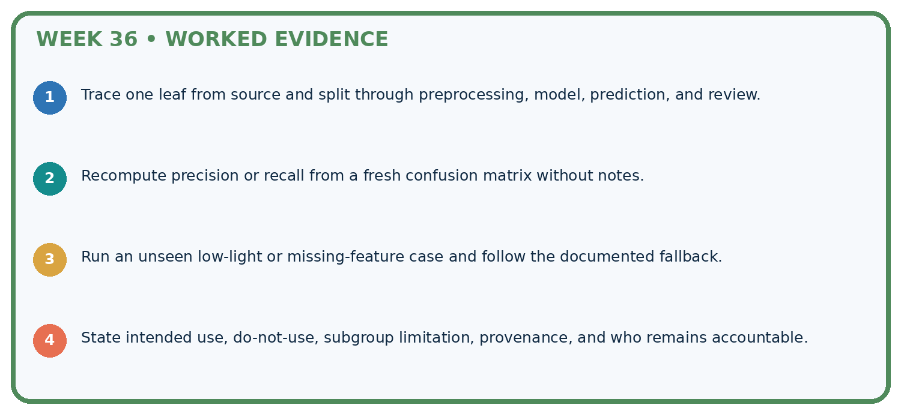
STEP 1 Trace one leaf from source and split through preprocessing, model, prediction, and review.
STEP 2 Recompute precision or recall from a fresh confusion matrix without notes.
STEP 3 Run an unseen low-light or missing-feature case and follow the documented fallback.
STEP 4 State intended use, do-not-use, subgroup limitation, provenance, and who remains accountable.
Recalculate, retrace, or restate the evidence independently:
A closer explanation
Machine learning project defense at a glance
Learn from the worked case
Cover the result before checking it. Say what is given, choose the procedure, and follow one step at a time. Then uncover the result and explain your first mismatch. Ask why a step is allowed, not only what number it produces.
A pictorial worked case: ML Builder Expo
Present a plant-classifier expo claim that another team could check.
The facts we will use
Toy expo evidence: 15 held-out photos from 5 plants; candidate12 correct, baseline10 correct. Three candidate failures are recorded; no outdoor trial exists.
All inputs and outcomes in this worked example are invented classroom data; no real model run is claimed.

Read the picture one step at a time
Why this result follows
Read the picture in order. Present the three failure records and indoor-only limitation beside the headline rate. The arrows show which recorded input or intermediate result each decision uses. Explain the deciding step aloud before checking the changed case; pointing to the final answer alone does not show how it follows.
What this example does not establish
Clear presentation helps review but does not increase the strength of a tiny or unrepresentative evaluation.
Student lesson · 7 of 14
Find and repair a mistake
ERROR DETECTIVE
Compare → Diagnose → Repair
Do not patch the answer. Find the earliest unsupported assumption, data problem, or experiment error.
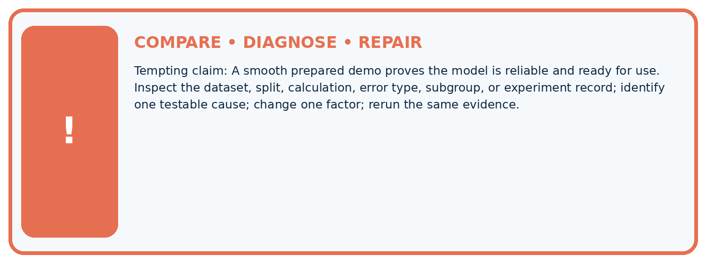
| Evidence record | Expected | Actual | Likely cause / next test |
|---|---|---|---|
| normal case | passes | ||
| boundary case | defined behavior | ||
| missing case | safe fallback | ||
| shifted case | measured limit |
Diagnose one cause and name the cleanest next experiment:
A closer explanation
The teacher rubric has four dimensions scored 0, 1, 2: valid data/splits, reproducible method, complete evaluation, and honest communication. Two means evidence is complete and explainable; one means partial evidence with identified gaps; zero means absent or materially incorrect. Report dimensions separately; a serious leakage problem cannot be hidden by presentation points.
Student lesson · 8 of 14
Practise together
ML STUDIO
Specify Before You Run
A trustworthy result can be reproduced from the recorded data, code, settings, and evaluation rule.

Experiment record
QUESTION + intended use + success threshold
DATA version + grouped split + leakage check
CODE/preprocessing + features + model + settings + seed
METRICS + positive class + units + denominators
PREDICTIONS + errors + subgroup slices + limitations
HUMAN reviewer + release, revise, limit, or stop decision
Write the minimum record needed to reproduce today's result:
A closer explanation
Peers ask three questions: what influenced model selection, which cases failed, and what evidence would change the conclusion? Respond using saved records. If an answer is unknown, say so and name the evidence needed. Record feedback as resolved, deferred with reason, or requiring new data.
Practise with less help: Trace evidence
Use workbook W2 for the connected example “Machine learning project defense”. First fill the input and rule boxes. Try the middle steps before asking for a hint. After a hint, try the next step yourself.
| Plan | Do | Check |
|---|---|---|
| What is given? Which rule or procedure applies? | Record each intermediate step. | Does the result follow? What remains unknown? |
Explain your trace to a partner. Your partner points to one step to check. Swap roles on the next case. Each person writes their own explanation.
Check your reasoning
Use the worked case for Machine learning project defense. Proposed explanation: “A final answer is enough”. Decide whether this explanation is supported. Point to the step or supplied fact that decides; explain your repair if needed.
Answer on your own before discussion. If you are unsure, say which step you need help with.
Explain the picture
Which three supporting items should be visible at the expo? Point to the relevant step in the picture, then write the changed result and the rule or evidence that supports it.
This is supported practice. Keep the separately named independent case for an attempt before feedback.
Student lesson · 9 of 14
Run the investigation
EVIDENCE LAB
Predict → Run → Calculate → Interpret
Keep the test conditions fixed, record every result, and change only one planned factor.
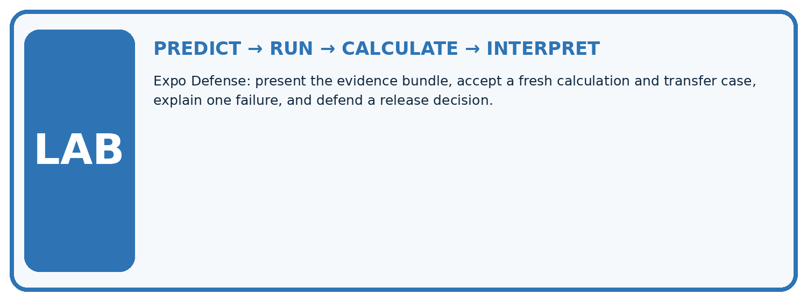
1. Write the hypothesis and expected evidence before running.
2. Expo Defense: present the evidence bundle, accept a fresh calculation and transfer case, explain one failure, and defend a release decision.
3. Run one normal, one boundary, one missing, and one shifted case.
4. Calculate the metric from raw counts or row-level errors.
5. Interpret what changed, what did not, and what remains unsafe or unknown.
| Case | Prediction | Actual | Calculation / evidence | Meaning / next test |
|---|---|---|---|---|
| Normal | ||||
| Boundary | ||||
| Missing | ||||
| Shifted |
Plan → try → check
Before trying: what do I expect, and why? While trying: which step could first go wrong? Afterwards: what did I actually observe, and what should change? Keep “not run” if you only traced the procedure.
Student lesson · 10 of 14
Build your understanding
MASTERY
From Knowing the Word to Owning the Idea
Move upward only when you can produce evidence without copying the example.

DEFINE Use all four terms precisely: technical defense, traceability, transfer test, release decision.
CALCULATE Reproduce the worked evidence with units and denominator.
TRACE Explain the data, code or decision path.
DIAGNOSE A smooth prepared demo proves the model is reliable and ready for use.
TRANSFER Solve a fresh dataset or model case.
IMPROVE Change one cause and rerun fixed evidence.
DEFEND State intended use, metric, limitation, and human responsibility.
Student lesson · 11 of 14
Connect your project
CUMULATIVE PROJECT
Responsible Plant Classifier
Every week adds one reviewable artifact to the same evidence-based capstone.
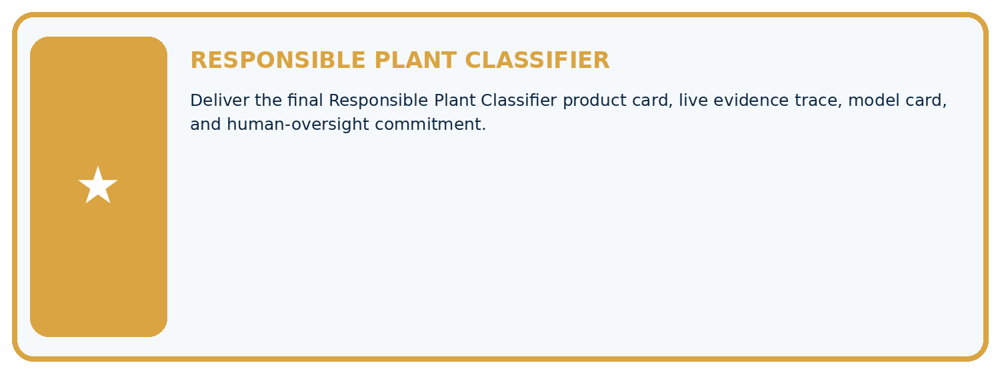
Which requirement or risk does this artifact address?
Which dataset, split, code, and metric version does it use?
What normal and shifted cases were tested?
What remains uncertain or weak?
What decision still belongs to a teacher or qualified human?
My evidence-linked project decision:
Evidence for your project
For your Responsible Plant Classifier, save the input, procedure, observed result and limitation of this check. Label this worked example as practice; use a different, previously unreviewed case when checking independent understanding.
Student lesson · 12 of 14
Show what you know
INDEPENDENT PROOF
Explain • Calculate • Transfer • Defend
Complete this with a fresh case after guided practice and compare it with the mastery criteria.
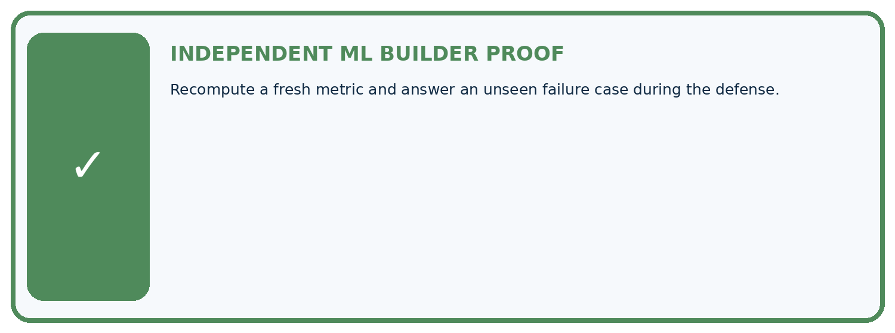
□ Define the task, feature/target roles, and intended-use boundary.
□ Show the calculation, code trace, or experiment record.
□ Test a normal case and one revealing boundary, missing, or shifted case.
□ Diagnose one failure without changing several factors at once.
□ Name a limitation, fairness concern, and the human-review action.
Independent evidence and defense:
My level: □ Not yet □ With one hint □ Independently □ I can teach and defend it
Student lesson · 13 of 14
Study a complete case
Week 36 Worked case
Use the supplied details to practise the weekly concept before attempting the independent question. This case extends the illustrated lesson.
The situation
Final classifier gets16/20 correct; two of four errors are false negatives.
The question
Report supported metrics and what is missing.
Worked explanation
Accuracy80%. Recall cannot be computed from FN alone; actual positives or TP are needed. Show full matrix, limits and review path.
Explain it in your own words
Which detail supports the answer, and why does it matter?
Trace the supplied case visually
Report only metrics the evidence supports
| Evidence or stage | Value or result |
|---|---|
| Correct final predictions | 16/20 |
Final classifier gets16/20 correct; two of four errors are false negatives.
Report supported metrics and what is missing.
Accuracy80%. Recall cannot be computed from FN alone; actual positives or TP are needed. Show full matrix, limits and review path.
Student lesson · 14 of 14
Try a new case independently
Independent case: Apply independently
Review a defense claiming 95 percent success on 20 cases but omitting the baseline, split history and errors. Give three revision requests and explain why polish is insufficient.
Attempt this case before feedback. Record any help. Earlier examples below are further practice; a case already practised with feedback cannot establish fresh transfer.
Week 36 Independent application
Close the worked explanation. Apply the idea to this different question without copying.
Your expo model succeeds on three demonstration plants. What evidence should accompany the demo and what limitation should you state?
My answer, with a trace, calculation or supporting evidence
Create and test
Change one relevant detail. Predict the result before testing. Include a boundary or missing-information case when it helps reveal a limit.
My changed input and expected result
Connect to your project
Deliver the final Responsible Plant Classifier product card, live evidence trace, model card, and human-oversight commitment.
The evidence I will keep
Your teacher has the independent answer and scoring criteria. Complete the matching workbook week to keep your practice evidence together.
Transfer practice from the original programme
Final counts are TP=12,FN=3,FP=5,TN=20. Compute accuracy, precision and recall, then state one limitation and a review trigger for the model defense.
Use feedback to improve
Attempt the independent case before hints. Record whether you worked alone, used a hint or followed a model. After feedback, fix the first unsupported step and explain why it changed. A later check uses a changed case, not a copied answer.